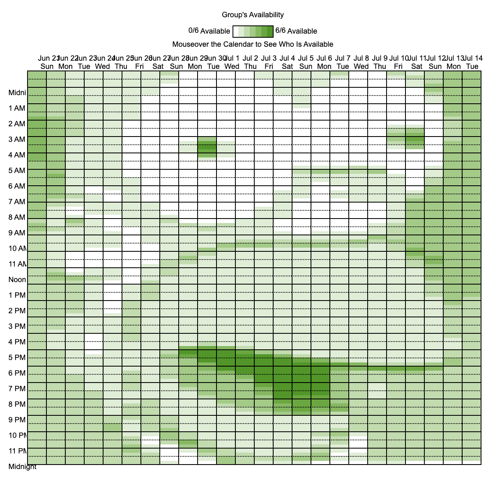
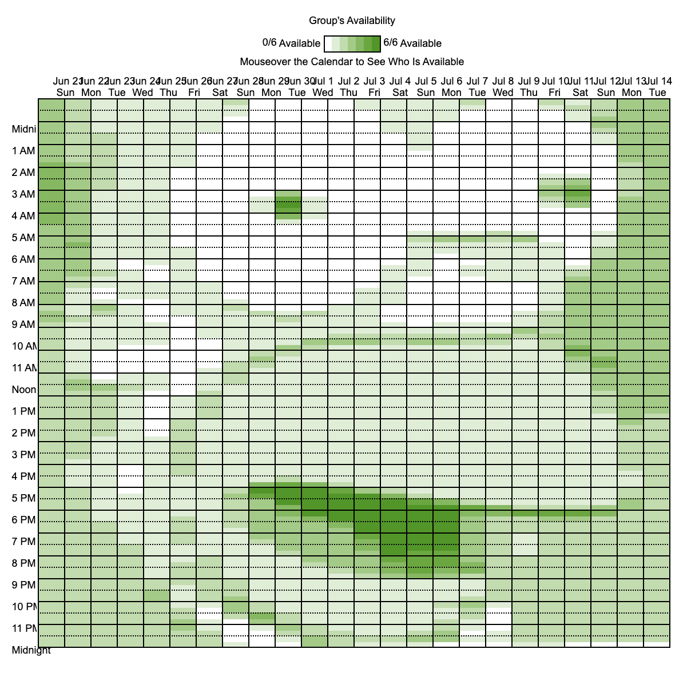

Art on when2meet.com
 

www.when2meet.com is a simple web-based tool used to schedule meetings. A group leader sends out a link, individuals fill out their availability, and the website displays the most-available meeting times in the form of a multi-shaded green calendar, where darker greens means more people are available, and lighter greens mean fewer.
The idea to make art on a when2meet has actually been with me for a while, before I even knew how to code. I always thought it would be a funny if I had my improv troupe open up a when2meet to schedule a practice only to find a minecraft creeper face. The only thing stopping me, so I thought, was my artistic capacity. It wasn’t until this weekend that I realized I totally had the means to pull this off, and got right to down to business.
Here's how it works: Given an image and a when2meet link, the program pixelizes the image, converts it to grayscale, determines the darkness of each pixel, and sends a corresponding number of bots one-by-one to the link to recreate the image. For the dark parts of the image, all or most bots are 'available', and for the light parts, few are.
An interesting challenge was how pixel art translated to when2meet. One square box on the schedule represents 1 hour on 1 day, but availability can actually be specified down to 15-minute increments, meaning that for every 1 hour box, there are 4 rectangular slab-shaped pixels, making for an odd (but better!) style of pixel art. Essentially, I had 4 times the vertical resolution as horizontal. All I had to do is, when preprocessing, resize images to be 4 times as high as wide. They look tall and stretched out as references, but once rendered, they looked great.
My original goal of minecraft creeper —a pretty basic pixel art image— turned out to be so easy that I moved on to more complicated images, allowing for some pretty great reveals to my friends (not attached, but I'm talking full-on recognizable inside joke photos). It definitely was a fun one, and due to how much I learned about python, web scraping, and script writing, you can't say it was entirely stupid and useless.
Here's the github link.